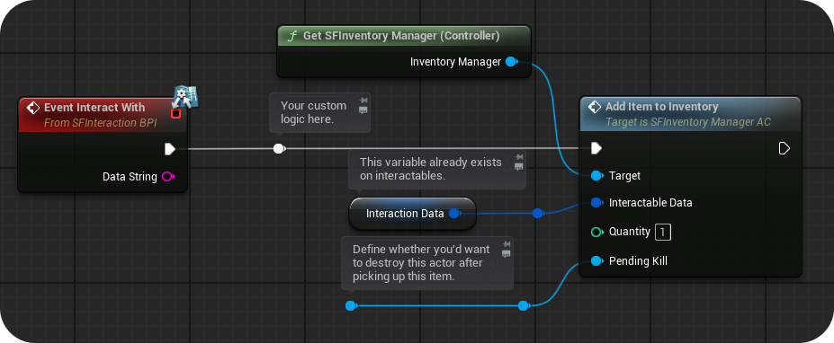
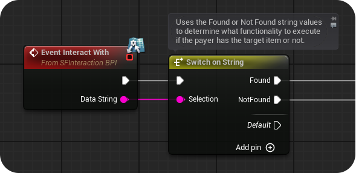
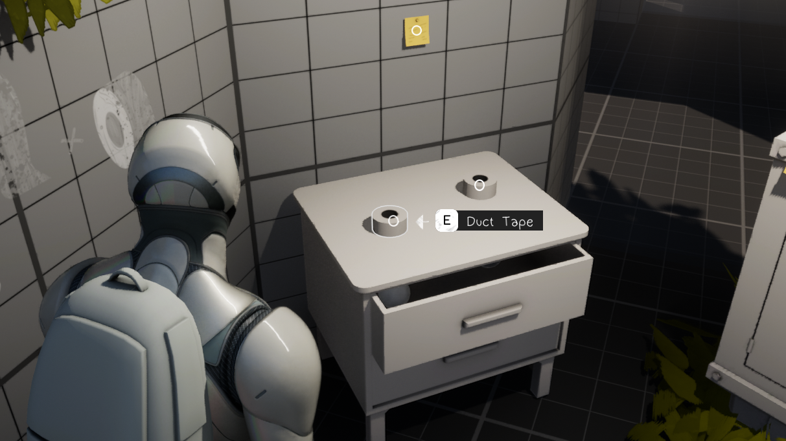
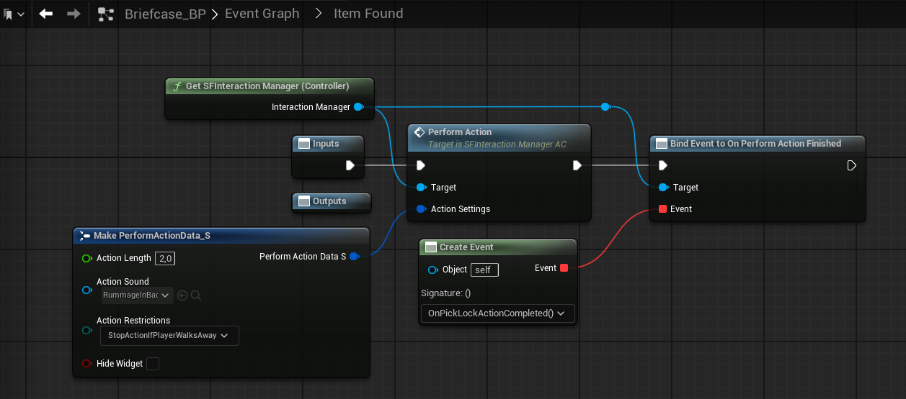
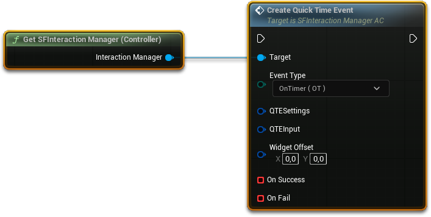

交互系统：让世界可以被“按 E”
五种交互方式各自的用途与参数、主次交互的组合规则、检视模式、QTE 与进度动作。这一章解决“我的东西为什么不能被点”以及“我该选哪种交互”。
交互是 SF 的门面：玩家看向一个东西，出现提示，按下键，发生事情。 背后的机制其实只有一句话——从摄像机打一条射线，打到谁，就问谁“你能怎么被交互”。 理解这句话，剩下的都是配置。
交互是怎么发生的一套流程
五种交互方式：先选对，再配参数
每个可交互物有两个槽位：主交互方式（PIM）和次交互方式（SIM）。
PIM 五选一；SIM 只能是 None 或 Inspect——也就是说，任何物体都可以在“主要功能”之外，额外提供“拿起来看看”。
| 方式 | 干什么 | 典型场景 | 会调用 BPI 事件吗 |
|---|---|---|---|
| Default 默认交互 |
什么都不做，只把控制权交给你。你自己在蓝图里写逻辑。 | 开门、按按钮、拉机关、触发剧情 | 会 |
| Inspect 检视 |
把物体浮到镜头前 3D 旋转查看，或显示可翻页的图文。 | 看照片、端详物件、读信件 | 会 |
| Quick Pickup 快速拾取 |
把物体塞进背包并销毁它。 | 捡钥匙、捡弹药、捡任务道具 | 不会（物体已经没了） |
| Has Item 需要物品 |
检查背包里有没有指定物品，然后走“有 / 没有”两条分支。 | 用钥匙开门、交任务物品、消耗品 | 会（带不同的 Data String） |
| Drag 拖动 |
用准星物理拖动 / 旋转物体。 | 拉抽屉、转阀门、移动雕像解谜 | 会（持续调用） |
能拿走 → Quick Pickup；要看/要读 → Inspect；要条件 → Has Item；要动 → Drag；其余全用 Default。
新手最常见的选择困难，其实用这四句话就能解决。Default 是最灵活的，因为它把“发生什么”完全交给你写。
Default：自己写逻辑的万能入口
这个方式本身不执行任何逻辑，唯一的事是调用 Event Interacted With 这个蓝图接口函数。
你在自己的蓝图里实现它，把想做的事接上去。
典型写法（在道具蓝图的事件图表里）：
- 在「我的蓝图」面板的 Interfaces 分类里找到
Event Interacted With，双击加到图表。 - 把逻辑接在它后面：播放音效、开灯、调用任务系统、销毁自己……
- 如果需要“先判断再执行”，就在这个事件后面接
Branch。
这个事件带一个 DataString 输入。它是一段文本，用来告诉你的逻辑“具体是哪种情况”，
例如 Has Item 方式会区分 Found / Not Found，Drag 方式会传位移量。
最常见的用法是接一个 Switch on String 节点分情况处理。
Inspect：把东西拿起来看
检视方式会生成一个专门的检视 Actor，把网格显示在镜头前。可配置项：
| 参数 | 说明 |
|---|---|
Inspect Method | 四种表现：Pan to Object（镜头平移到物体）、3D Inspect（3D 旋转查看）、Readable（可翻页图文）、3D Inspect + Readable（两者都有） |
Inspect Actor Class | 可选：用一个自定义 Actor 代替默认检视体（想加特效、加灯、加动画时用） |
Can Item be Picked Up when Inspecting | 勾上后，玩家在检视界面里还能顺手拿走它 |
3D Inspect Object Distance from Camera | 物体离镜头多远。要按模型大小调，大模型放太近会糊满屏幕 |
3D Inspect Object Offset | 位置偏移，用来把物体挪到画面中间 |
Readable Text Color | 可读文本的颜色 |
Readable Text Pages / Page Images | 文字分页内容，以及每页可选的插图 |
- 模型 pivot 放在几何中心：3D 检视是绕 pivot 旋转的，pivot 在边角会导致旋转时物体乱甩。
- 距离按“包围盒最长边”的 2–3 倍设：不确定就先填一个值进游戏看，再微调。
5.2 新增：动画检视（Animation Inspection）——除了静态/骨骼网格，还能把物体放到角色手上、伴随动画旋转查看。
这个模式需要在角色蓝图和动画蓝图里做一点接入（加一个 AnimInspectAnchor_SC 场景组件、拷贝两段动画图表），
步骤见 第 8 章迁移里的「Anim Inspect Dependencies」。
Quick Pickup：最简单的拾取
需要配的只有三样：
Item Inventory Icon：背包里显示的图标（Texture2D）；Can Use/Can Combine/Can Drop：三个开关，决定这个道具在背包里能干什么；- 物品名称（在交互数据顶部的
Object Name）。
这个方式会先销毁物体、再把它加进背包，所以 Event Interacted With 根本来不及执行。
如果你需要“捡起时触发剧情 / 加任务 / 打标记”，正确做法是：
用 Default 方式 → 写你的逻辑 → 最后调用 Inventory Manager 的 Add Item to Inventory，
并把它被销毁的引用传进去。

Has Item：带条件的交互
适合“有钥匙才能开门”“有 3 根骨头才能交任务”这类。核心参数：
| 参数 | 说明 |
|---|---|
Inventory Items | 要检查的物品清单（名称 + 数量），可加多条 |
Consume Items | 交互后是否消耗掉这些物品 |
Must Player Have All Items | 关掉时：只要满足清单里任意一条数量即可；打开时：必须全部满足 |
Prompt Item Data | 可选。填了之后，交互提示上方会显示“需要哪些物品、各多少个”，需要给名称 + 图标 |
它会带两个不同的 Data String（Found / Not Found）调用事件。
你在蓝图里用 Switch on String 分成两支：找到就开门并消耗钥匙，没找到就播放“锁住了”的音效。

Event Interact With 的 Data String 直接接 Switch on String，两个分支分别写“有物品”和“没物品”的逻辑。Drag：用准星拖动物体
| 参数 | 说明 |
|---|---|
Effected Axis | 只允许沿某个轴移动，写成 1,0,0 这样的向量（只能填一个轴） |
Drag Speed Multiplier | 拖动速度倍率 |
Drag Distance from Origin (Min/Max) | 离原点可移动的范围，形成“滑轨”限制 |
Swing/Rotate | 改为旋转模式，旋转轴 = 上面设置的轴 |
Camera Focus Mode | 拖动时镜头是否跟随物体 |
Play Moving Sounds | 移动中 / 靠近原点时的音效 |
拖动过程中会持续调用事件，并把「已移动/旋转的量」放进 Data String。
利用这一点可以做解谜：转到位才开锁、推到某个位置才触发机关。
交互提示：三段文字怎么来的
提示不是一张固定图片，而是根据物体数据动态拼出来的：
- 用
Has Item且配了物品图标 → 提示上方会多出一排“需要的物品”。 - 次交互设为
None→ 只显示一行拾取文字。 Prompt Text填{empty}→ 只显示物体名称，不显示其他。Prompt Text填{simplified}→ 只显示按键，不显示文字。

这不是坏了。提示控件的透明度被 SFInteractionWidget_SC 场景组件在运行时接管，编辑时故意设为 0。
想编辑它，选中控件根节点，把 Render Opacity 临时改成 1，改完记得改回 0。
进度动作：给操作加一个“读条”
撬锁、制作、长按开门——这些需要“花时间”的动作，用交互管理器里的 Perform Action：
屏幕中央会出现一个圆形进度条。
| 参数 | 说明 |
|---|---|
Action Length | 总时长（秒） |
Action Restrictions | None（只能手动停止）/ Stop Movement Until Completed（期间不能移动）/ Stop Action if Player Walks Away（离开原位就中断） |
Action Sound | 开始时播放的音效 |
Hide Widget | 勾上则不显示进度条（走“隐形读条”） |
结束后用两个事件分发器收尾：OnPerformActionFinished（完成）与 OnPerformActionStopped（被打断）。

Make PerformActionData_S 设好时长、音效、限制，再接 Perform Action，最后绑定“完成”事件。QTE：一秒决定生死的按键
一个函数搞定，参数打包在两个结构体里（QTE Settings 与 QTE Input）。支持两种类型：
| 类型 | 规则 | 适合 |
|---|---|---|
| On Timer（OT） | 限时内按下指定键即成功 | 闪避、抓住绳子 |
| Target Key Presses（TKP） | 限时内连续按 N 次 | 挣脱、连续点击、蓄力 |

QTE Settings（时间、次数）与 QTE Input（按键）两块。可配：时限、按键（键鼠与手柄各一）、要按的次数、Ignore Specified Keys（按了这些键不算失败）、Ignore All Keys Except Targets（除目标键外一律不算失败，等于“按错也不会死”）。
在过场里插 QTE 也支持——直接在关卡序列的对应时间点调用即可。成功/失败分别绑定 On Success 与失败回调。
这一章最常见的四个坑
| 现象 | 原因 | 解决 |
|---|---|---|
| 物体完全没有提示 | 没实现接口 / 不是 InteractableBase 子类 / 没有碰撞 | 检查父类与碰撞预设；确认 InteractableData_S 已填名称 |
| 提示出现但按键无效 | 该交互方式对应的逻辑没写（Default 方式必须自己实现事件） | 补上 Event Interacted With 的实现 |
| 拾取后任务没加、剧情没触发 | 用了 Quick Pickup，事件来不及执行 | 改用 Default，手动调用 Add Item to Inventory |
| 物体在墙后也能被交互 | 射线被遮挡，但提示没做遮挡 | 反过来：想穿透时给物体加 IgnorePromptTrace 标签；想正常遮挡就别加 |
交互物做好了，接下来是它的“下半场”：进了背包以后怎么办。